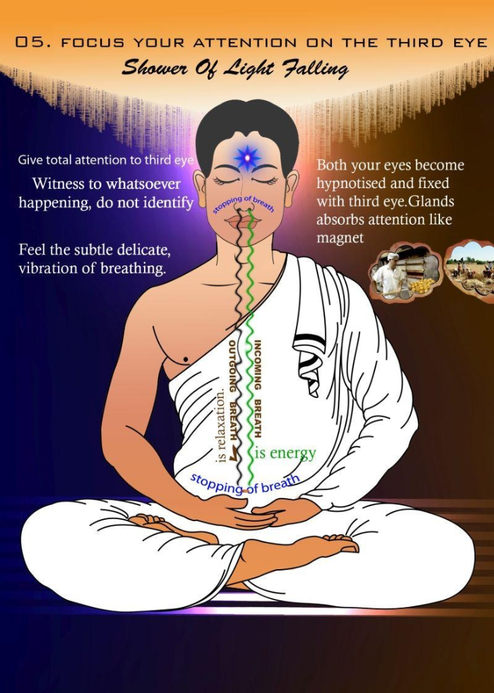
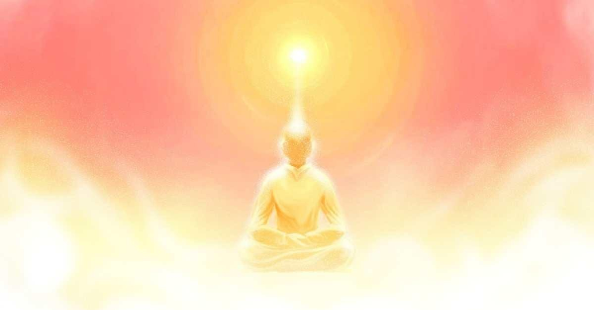
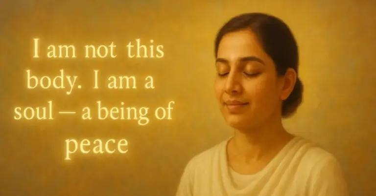
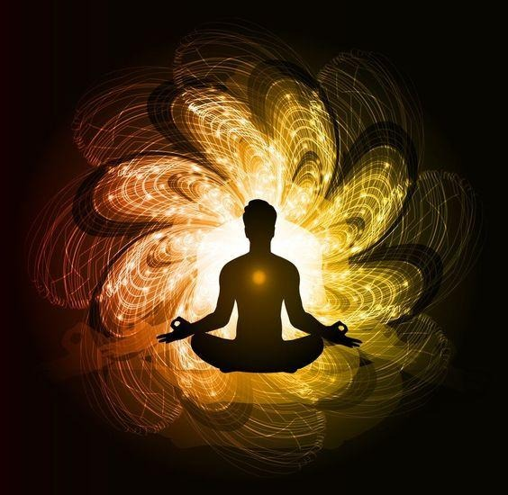
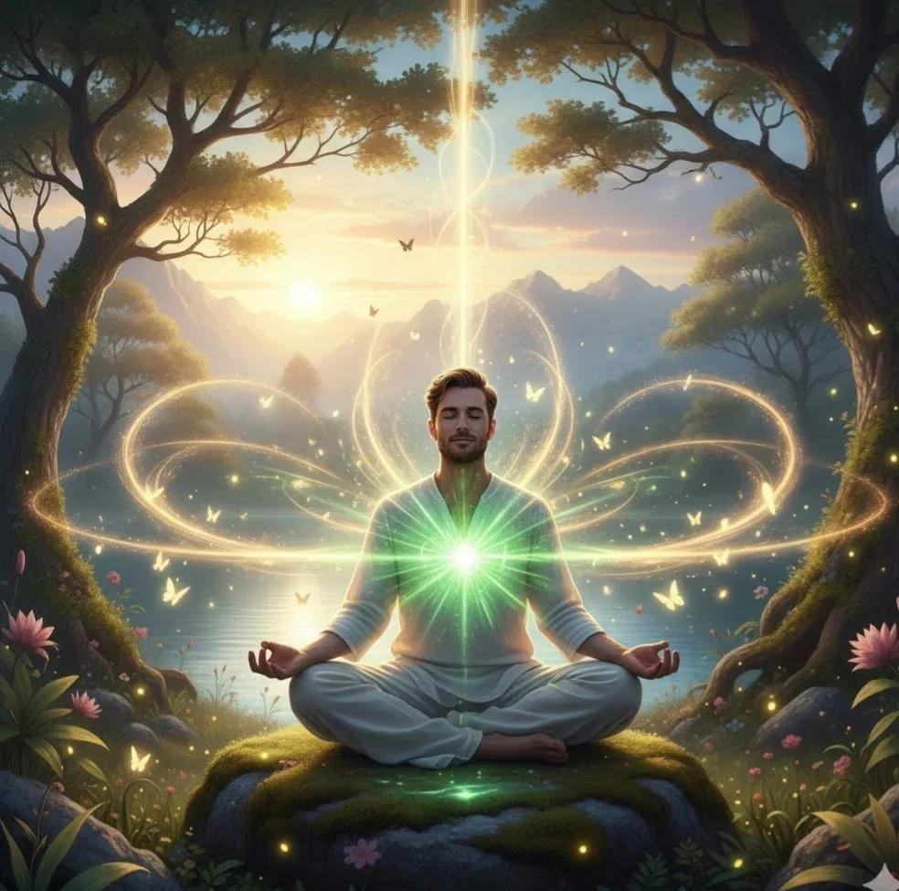
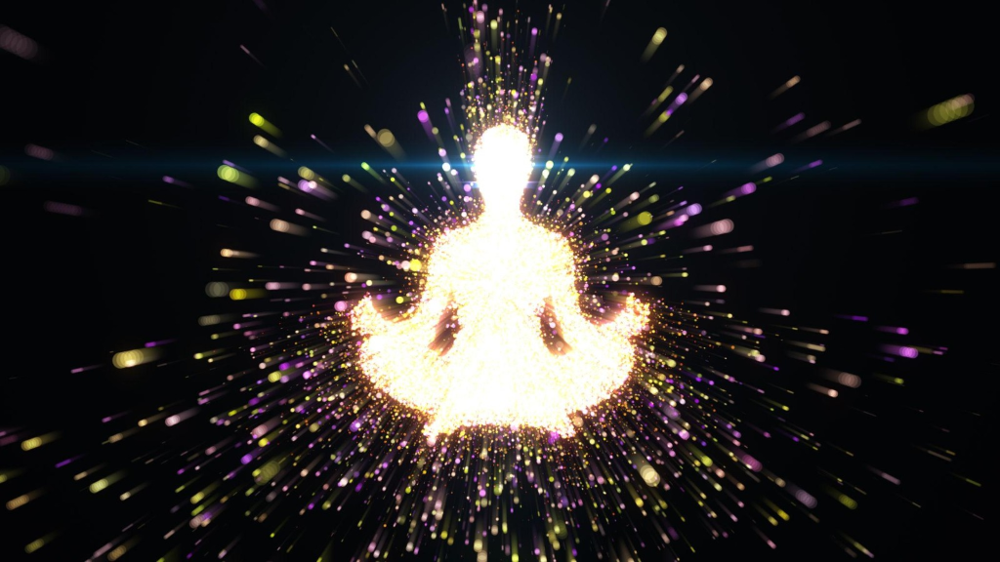
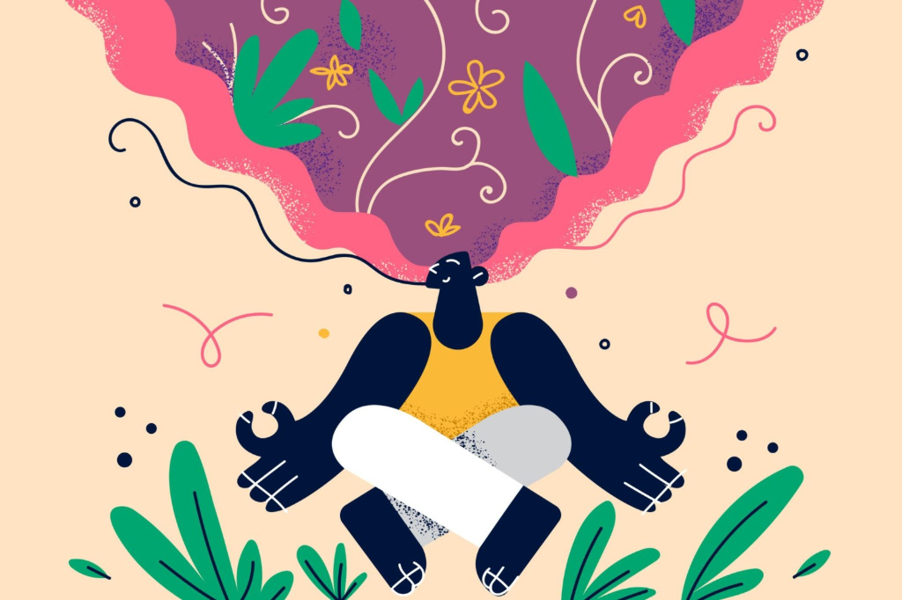

Turn your thoughts
into a peaceful
spiritual state.
MEDITATION
MAKE YOUR
MIND PEACEFUL
CONNECT WITH
THE SUPREME SOUL
Experience Peace
Prepare yourself for a deep, guided state of inner silence.
Relax Your Body
Let go of all physical tension. Imagine a divine light healing every cell of your body.
Focus on Your Breath
Breathe in peace, breathe out worries. Observe the silent rhythm of your breath.
Connect with Inner Self
You are a tiny, radiant point of light, seated at the center of your forehead. A pure soul.
Experience the Supreme
Connect with the Ocean of Peace. You are surrounded by divine love and light.
You Are Peace
Carry this stillness with you into the world.
About Rajyoga
What is Rajyoga Meditation?
Rajyoga Meditation is a simple and powerful form of meditation taught mainly by the Brahma Kumaris.
- “Raj” = King (self-control)
- “Yoga” = Connection (with the Supreme)
So, Rajyoga means becoming the ruler of your mind by connecting with the Supreme Soul (God).
Unlike other meditation:
- No mantras
- No complicated posture
- Can be done with open eyes
- Can be practiced anywhere, anytime
It is a self-awareness meditation where you realize:
“I am a soul (energy), not just a
body.”
Core Philosophy
The core philosophy of Rajyoga rests on the understanding that every individual is fundamentally a peaceful and pure spiritual energy (soul). By shifting our awareness from the physical body to this spiritual identity, we can directly commune with the Supreme Source of light, love, and power.

Rajyoga is based on 3 main ideas:
-
1. I am a Soul
- A tiny point of spiritual energy in the forehead
-
2. God is Supreme Soul
- A powerful, pure source of peace and energy
-
3. Connection = Charging
- When you connect, you recharge your mind
This helps you:
- Control thoughts
- Reduce stress
- Improve focus
- Feel peace and happiness
Step-by-Step Process
Contemplate (सोच / Awareness): Contemplation is the first step where you gently turn your thoughts inward. Instead of identifying yourself as just the body, you begin to realize your true identity as a soul—a tiny point of spiritual light.
• You sit comfortably, keep your eyes relaxed (Rajyoga is usually done with open eyes), and think: “I am a peaceful soul… a point of light seated in the center of the forehead.”
• This stage is about changing your perspective—from physical identity to spiritual identity.
• It helps reduce stress, ego, and negative thinking because you detach from labels like name, role, or status.


Concentrate (एकाग्रता / Focus): In this stage, you bring your full attention to yourself as a point of spiritual light (soul). Your mind becomes steady, and you gently focus inward without force. Now, along with this awareness, you begin to connect with your 7 original (innate) qualities, which are naturally present within every soul:
🌟 The 7 Innate Qualities of the Soul:
- Peace 🕊️ – Your original state is calm and undisturbed
- Love ❤️ – Pure, unconditional care and connection
- Purity ✨ – Clean thoughts, free from negativity
- Power 💪 – Inner strength to face situations
- Knowledge 📘 – Awareness and clarity of truth
- Happiness 😊 – Natural joy that doesn't depend on external things
- Bliss 🌈 – Deep spiritual contentment and fulfilment

Experience (अनुभव / Inner Feeling): At this stage, meditation becomes deeper.
You don't just think—you start feeling the qualities within.
You may experience:
- Deep peace and silence
- Emotional stability
- Lightness and happiness
- A sense of connection with yourself and the Divine
This is where meditation becomes powerful, because your thoughts turn into real inner experiences.
The more you practice, the stronger and more natural these feelings become.


Maintain (धारण / Living it): The final and most important step is to carry this awareness into your daily life.
You remain aware:
👉 "I am a peaceful soul" even while working, studying, talking, or facing challenges.
This means:
- Responding calmly instead of reacting
- Maintaining positivity in difficult situations
- Interacting with others with respect and understanding
- Staying emotionally balanced
- It is not about forcing yourself—it is about naturally living in that awareness.

Complete Flow (Easy Way to Remember)
| Step | Meaning | Result |
|---|---|---|
| Contemplate | Who am I? | Correct identity |
| Concentrate | Focus mind | Stability |
| Experience | Feel it | Inner power |
| Maintain | Live it | Life transformation |
Learn Rajyoga Meditation (Video)
Here's a simple guided session:
→ Open link directly on YouTube15 Minute Meditation:
→ Open link directly on YouTubeBenefits of Rajyoga
- Better concentration (helpful for studies & coding)
- Emotional balance (great for performers like dance)
- Increased energy & confidence
- Inner peace & stress relief
- Better relationships (positive thinking)
Important Tips
- Don’t force your mind — gently guide it
- Consistency > duration
- Practice daily (even short sessions)
- Keep thoughts simple & positive